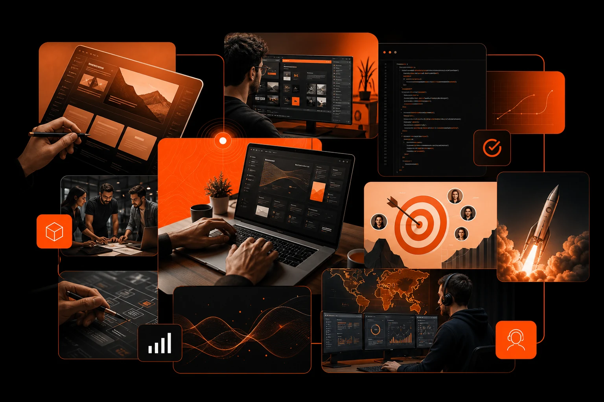

What this solves
Most digital projects lose quality between strategy, design, code, campaigns and support. This service keeps those decisions connected so the finished website can attract, convert and keep improving.
Reusable service template
Use this service path when the challenge is not just design, not just development, and not just ads. It is the full digital system around the customer journey.
Discuss this service
Most digital projects lose quality between strategy, design, code, campaigns and support. This service keeps those decisions connected so the finished website can attract, convert and keep improving.
Design direction, sitemap, core pages, reusable sections, contact form workflow, launch checklist, analytics notes and a structured improvement backlog.
A more credible digital presence, clearer service communication, better enquiry quality, fewer vendor handoff issues and a site that can support paid traffic, organic search and sales conversations.
FAQ
Yes, but the website is still planned with conversion, analytics and future campaign traffic in mind.
Project communication starts through the structured enquiry form so we can collect the right context and respond clearly by email.
Yes. Support can include content updates, technical checks, conversion improvements and marketing coordination.